Geometry¶
The Geometry page is used to modify or add to the geometry of the vehicle. When the user enters this page they are presented with a tree view of the vehicle’s components on the left side of the screen. On this side the user can expand and view the details of vehicle properties and components, edit vehicle geometry components, and even remove some them. There are also a set of buttons at the bottom of the left side of the page that allow users to add various components to the vehicle. Components available differ between vehicle types (aircraft or weapon). The right side of the page is filled with an interactive 3D representation of the vehicle which is generated from the geometry defined on the left side of the page. The user can left click and drag the mouse to move the camera around the vehicle. The user can also use the mouse wheel to zoom in and out on the vehicle. The four corners of the 3D view also display information pertinent to the vehicle. The top left side includes the vehicle name and physical dimensions of the vehicle. The top right side includes information about the vehicle’s weight, center of gravity and inertia. The bottom left side includes information specific to the vehicle component that is currently selected on the left side of the page. The bottom right side of the 3D view gives information about the current camera position and scaling information.
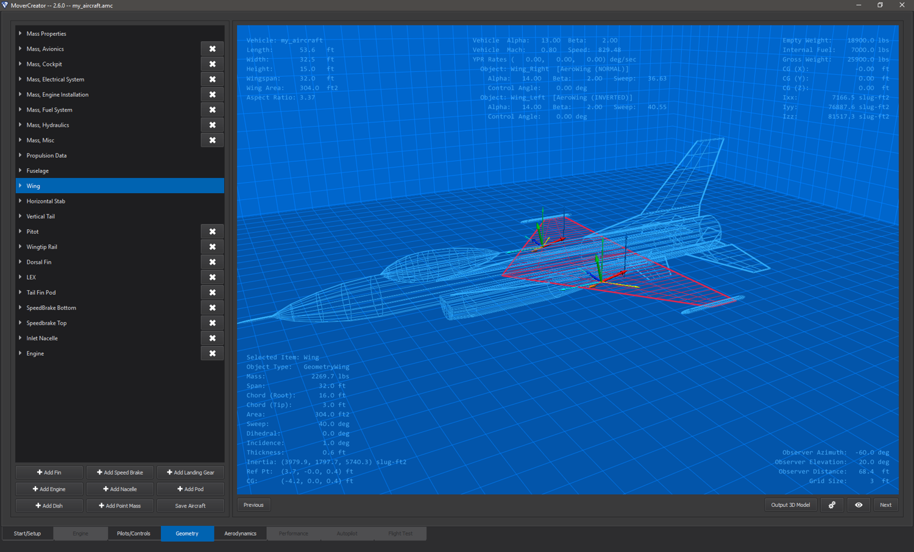Viewing/Editing Vehicle Components¶
The left side of the Geometry page contains a list of the components of the vehicle. Each component can be selected and expanded to give more information about it. Selecting a component from the component list will highlight that component in both the list view as well as in the 3D view. In order to aid in seeing the component the vehicle in the 3D view will become transparent. Expanding a component will reveal the properties pertaining to that component. In most cases these details have editable values, including but not limited to component mass, physical dimensions, and shape.
Adding/Removing Vehicle Components¶
On the Geometry page it is possible to modify the vehicle by adding or removing components from it. The bottom left side of the page contains a set of buttons that when clicked will add the component type listed on the button to the vehicle. See the image below for an example of these buttons.
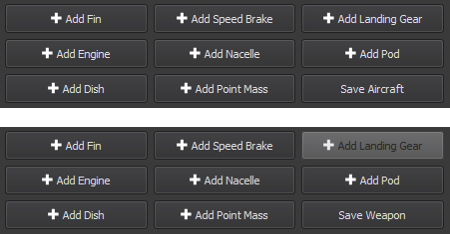Note: when a component is first added to a vehicle it might not be immediately obvious that it has been added. New components are added at reference point of (0,0,0) and with physical geometry attributes (length, width, height, span, sweep, etc.) set to 0. Once these and other properties are edited the new component will become more obvious in the 3D area.
Some components may be removed from the vehicle. If the option is available for a component to be removed there will be a button with an ‘X’ next to it.
Vehicle Components¶
There are a set of predefined components that must exist for each vehicle type and configuration. These components cannot have their names edited, nor can they be removed from the vehicle. Individual properties within these components can be edited.
Aircraft control configurations:
cCONFIG_STABS_ONE_TAIL |
cCONFIG_CANARDS_STABS_ONE_TAIL |
cCONFIG_CANARDS_ONE_TAIL |
cCONFIG_STABS_ONE_VENTRAL_TAIL |
cCONFIG_STABS_UPPER_LOWER_TAILS |
|
|---|---|---|---|---|---|
cCONFIG_STABS_TWO_TAILS |
cCONFIG_CANARDS_STABS_TWO_TAILS |
cCONFIG_CANARDS_TWO_TAILS |
cCONFIG_STABS_TWO_VENTRAL_TAILS |
||
Mass Properties |
X |
X |
X |
X |
X |
Propulsion Data |
X |
X |
X |
X |
X |
Fuselage |
X |
X |
X |
X |
X |
Wing |
X |
X |
X |
X |
X |
Horizontal Stabilizer |
X |
X |
X |
X |
|
Canard |
X |
X |
|||
Vertical Tail |
X |
X |
X |
X |
|
Ventral Tail |
X |
X |
cCONFIG_FLYING_WING |
cCONFIG_STABS_FLYING_WING |
cCONFIG_VTAIL |
cCONFIG_INVERTED_VTAIL |
|
|---|---|---|---|---|
Mass Properties |
X |
X |
X |
X |
Propulsion Data |
X |
X |
X |
X |
Fuselage |
X |
X |
X |
X |
Wing |
X |
X |
X |
X |
Horizontal Stabilizer |
X |
|||
V-Tail |
X |
|||
Inverted V-Tail |
X |
Weapon control configurations:
cNO_CONTROL |
cCONFIG_TAIL_FINS |
cCONFIG_CANARD_FINS |
cCONFIG_STABS_ONE_TAIL |
cCONFIG_STABS_ONE_VENTRAL_TAIL |
cCONFIG_STABS_UPPER_LOWER_TAILS |
|
|---|---|---|---|---|---|---|
Mass Properties |
X |
X |
X |
X |
X |
X |
Propulsion Data |
X |
X |
X |
X |
X |
X |
Body |
X |
X |
X |
X |
X |
X |
Wing |
X |
X |
X |
|||
Horizontal Stabilizer |
X |
X |
X |
|||
Canard Control Fin |
X |
|||||
Tail Control Fin |
X |
|||||
Vertical Tail |
X |
X |
||||
Ventral Tail |
X |
X |
Mover Creator supports a wide range of vehicle components in addition to the required components in the tables above. Some components are only available for a particular vehicle type (aircraft or weapons), and some components are available for both aircraft and weapons. See the table below
-
-
Horizontal Stabilizer
Canards
Vertical Tail
Ventral Tail
V-Tail
Inverted V-Tail
Tail Control Fin
Canard Control Fin
-
Bodies¶
Body component types include:
For all body components, a forward shape and an aft shape may be set with a user-defined length.
Forward shape options available are:
Ogive
Cone
Round
Blunt
Aft shape options available are:
Ogive
Cone
Round
BoatTail
Blunt
Fuselage (Aircraft only)¶
The Fuselage vehicle component is only available for aircraft vehicle types and it is one that cannot be renamed nor can it be removed from the vehicle. This is the main part of the aircraft onto which all other components should be added.
In addition to allowing the user to modify the physical and positional attributes of the Fuselage, it also allows the user to specify the forward shape and aft shape separately. The Fuselage also allows the user to add a canopy to it and define positional and geometric properties of it as well.
When the Fuselage component is selected, the 3D rendering of the vehicle will become transparent and highlight the fuselage and, if added, canopy of the aircraft.
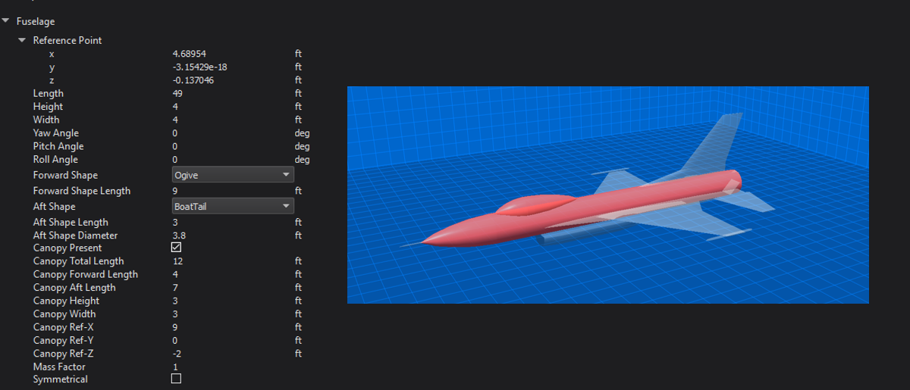Body (Weapons only)¶
The Body vehicle component is only available for weapons vehicle types and it is one that cannot be renamed nor can it be removed from the vehicle. This is the main part of the weapon onto which all other components should be added.
In addition to allowing the user to modify the physical and positional attributes of the Body, it also allows the user to specify the forward shape and aft shape separately.
When the Body component is selected, the 3D rendering of the vehicle will become transparent and highlight the body of the weapon.
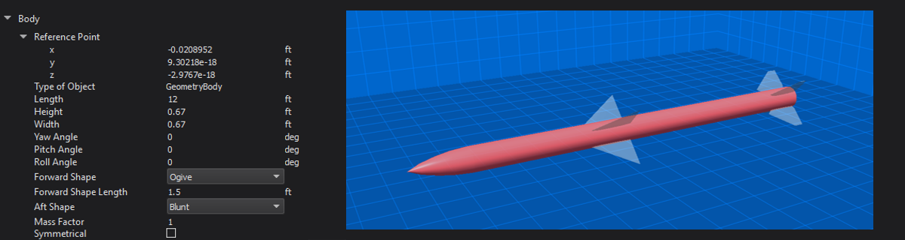Pod¶
Users can add pods on to the vehicle. Users can adjust the pod’s positional information, physical attributes of length, height, width, and thickness, and the pod’s orientation. When the pod component is selected, the 3D rendering of the vehicle will become transparent and highlight the selected pod.
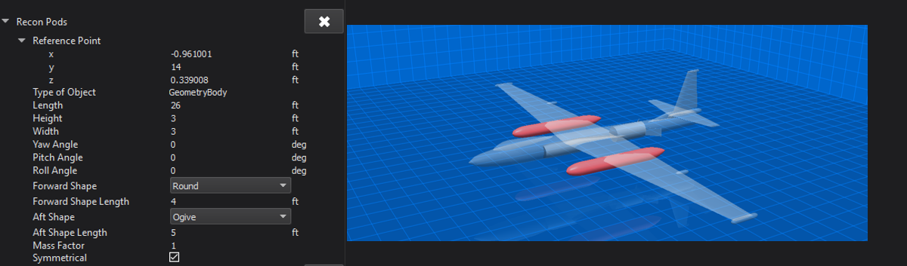Wing¶
The Wing vehicle component is one that cannot be renamed nor can it be removed from the vehicle. The wing is a special instance of a surface type that will always be horizontally symmetrical.
In addition to allowing the user to modify the physical and positional attributes of the Wings they can also add and define:
Ailerons
Dragerons
Elevons
Spoilerons
Spoilers
When a wing control surface is checked, additional properties appear allowing the user to set the chord and span fraction as well as surface and actuator limits. For each control surface, “Chord Fraction, Start” is defined as the percent chord from the leading edge at which the control surface begins. Similarly, “Chord Fraction, End” is defined as the percent chord from the leading edge at which the control surface ends. For trailing edge devices, this will be equal to 1. The “Span Fraction, Start” is defined as the percent span from the wing root at which the control surface begins. The “Span Fraction, End” is defined as the percent span from the wing root at which the control surface ends. The user can also choose whether or not to use exponential mapping for the control inputs using the “… Expo Angles” for each wing control surface.
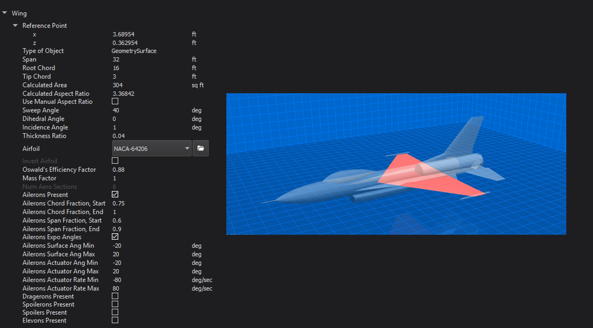Surfaces¶
There are two main types of surfaces:
Control surfaces may not be removed from the vehicle nor can they be renamed. All fixed surfaces are removable and may be renamed. Most surfaces have a symmetry option that allows the vehicle to have multiple instances of a surface type. Not all symmetry types are allowed for every type. Available symmetry options for each surface type are shown in the table below.
Horizontal Stabilizer |
Canards |
Vertical Tail |
Ventral Tail |
V-Tail |
Inverted V-Tail |
Tail Control Fin |
Canard Control Fin |
All Fixed Surfaces |
|
|---|---|---|---|---|---|---|---|---|---|
Single |
X |
X |
X |
X |
X |
||||
Horizontal |
X |
X |
X |
X |
X |
||||
Vertical |
X |
||||||||
X Pattern |
X |
X |
X |
||||||
+ Pattern |
X |
X |
X |
All surface components have an airfoil which may be changed to any airfoil defined in the \resources\mover_creator\dataAirfoils\ directory.
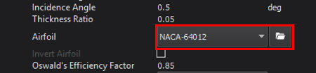To view the airfoil data, click on the folder icon next to the airfoil drop-down menu (See image above). This will open a plot viewer for the airfoil, shown in the image below.
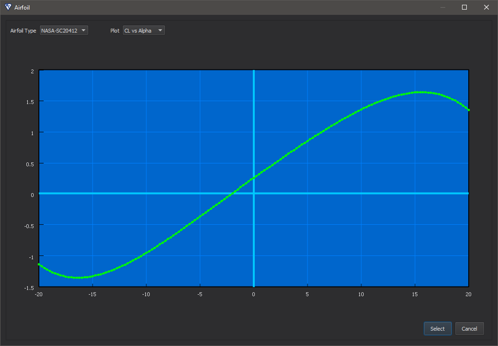The airfoil currently being viewed may be changed by selecting an airfoil from the “Airfoil Type” drop-down at the top of the window.
The plot may be changed by selecting a plot from the “Plot” drop-down. Plots available to view include:
CL vs Alpha
CD vs Alpha
CM vs Alpha
The standard airfoils provided with Mover Creator and their filenames include:
Airfoil Name |
File Name |
|---|---|
BAC 300 series |
BAC-3XX.foil |
BAC 400 series |
BAC-4XX.foil |
NACA 0008 |
NACA-0008.foil |
NACA 0012 |
NACA-0012.foil |
NACA 6716 |
NACA-6716.foil |
NACA 63A409 |
NACA-63409 |
NACA 64(1)-012 |
NACA 64012 |
NACA 64-206 |
NACA-64206.foil |
NACA 63(3)-218 |
NACA-633218.foil |
NACA 65(3)-018 |
NACA-653018.foil |
NASA SC(2)-0412 |
NASA-SC20412.foil |
For more information on the predefined airfoil templates, see Mover Creator Standard Airfoil Templates.
The user may use one of the airfoil templates provided, or create their own using the same JSON format in the templates.
Note
At a minimum, these three sets of airfoil data must include data up to one data point beyond the stall maxima for both positive and negative alpha.
The image below shows an example of the minimally acceptable set of airfoil data. From left to right: CL vs Alpha, CD vs Alpha, CM vs Alpha.
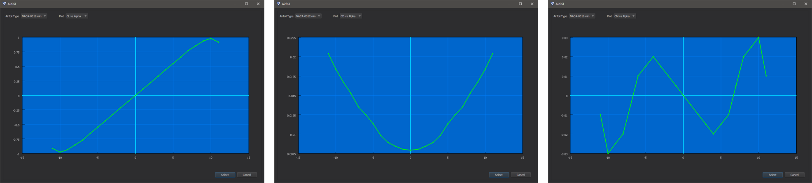Control Surfaces¶
Some surface names remain reserved for the major control surfaces of the vehicle. These components may not be renamed or deleted. These include:
Horizontal Stabilizer
Canards
Vertical Tail
Ventral Tail
V-Tail
Inverted V-Tail
Tail Control Fin
Canard Control Fin
The properties available for editing are shown in the picture below. In particular, the image shows the properties for a Horizontal Stabilizer, but these same properties are available for all major control surfaces listed above.
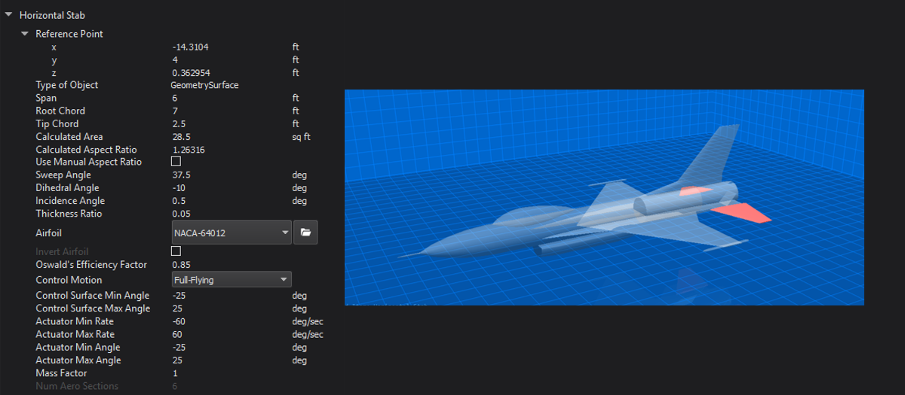All control surfaces may either be “Full-Flying” or “Control Surface”. This can be changed in the “Control Motion” drop-down menu. If “Control Surface” was specified, additional options will appear for the control surface chord and span fractions. The control surface fractions are only drawn in wireframe mode.
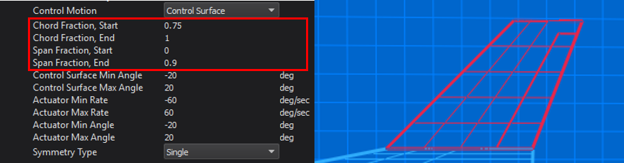Fixed Surfaces¶
A Fin is an instance of a surface type that can be placed anywhere on the vehicle. Users set the fin’s positional information, physical attributes such as Span, and angular information such as Sweep Angle.
Fins support symmetry which allows the user to set up properties for a base fin that can be inherited by fins specified by the chosen symmetry type. Symmetry types available are:
Single - no extra fins created
Horizontal - uses the base user-defined fin to create two fins along the horizontal axis of the vehicle.
Vertical - uses the base user-defined fin to create two fins along the vertical axis of the vehicle.
Pattern - uses the base user-defined fin to create four fins along the vertical and horizontal axes of the vehicle.
X Pattern - uses the base user-defined fin to create four fins rotated 45 degrees from the vertical and horizontal axes of the vehicle.
When the Fin component is selected, the 3D rendering of the vehicle will become transparent and highlight the selected fin.
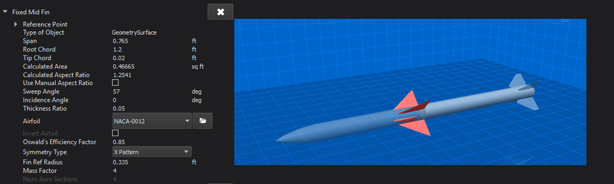Other Components¶
Mass Properties¶
The Mass Properties vehicle component is one that cannot be renamed nor can it be removed from any vehicle. It is a special component that lists the calculated mass of each component that is part of the vehicle as well as the overall mass of the vehicle. The position of the vehicle’s center of gravity is also calculated and displayed here. Rotational inertias are also listed. As other vehicle components are modified, added or removed, the Mass Properties component will get updated with newly calculated values. If more accurate inertia values are available, the user may wish to uncheck “Auto-Calculate Inertia”. Mover Creator will then use the user provided Ixx, Iyy, and Izz values.
Because of the way Mover Creator performs it’s calculations, the reference point of the vehicle should be coincident with the vehicle center of gravity. In other words, the “CG Point” must be very nearly zero, which is true of all the Standard Vehicle Templates. As the user adds and removes components, the center of gravity will begin to shift away from the vehicle’s reference point. When he or she is done defining the Geometry and moves on to the Aerodynamics page, Mover Creator will automatically shift the vehicle to be coincident with the center of gravity. The user may also do this manually in the Geometry Settings
When the Mass Properties component is selected, the 3D rendering of the vehicle will not have any geometric components selected and will render the vehicle with little transparency.
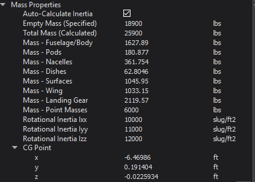Point Mass¶
Users can add a point mass to the vehicle. The point mass’s positional information and mass can be adjusted by the user.
Point masses are a great way to represent parts internal to the vehicle, the mass of which would effect the overall center of gravity of the vehicle. A good example would be the vehicle’s radar systems.
Warning
The “Total Mass” in the Mass Properties includes point masses. If the mass of the point mass is too high compared to the overall vehicle mass, vehicle component masses will become negative.
When the point mass component is selected, the 3D rendering of the vehicle will become transparent and highlight the selected point mass.
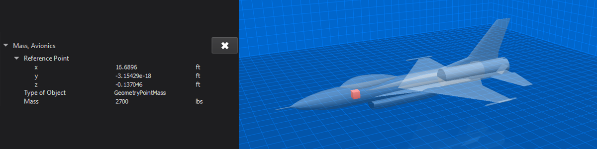Dish¶
Users can add a dish on to the vehicle. Dishes have positional information, and physical attributes of diameter, thickness and mass that can be adjusted by the user.
When the dish component is selected, the 3D rendering of the vehicle will become transparent and highlight the selected dish.
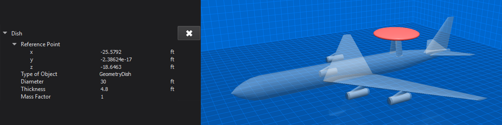Nacelle¶
Users can add nacelles on to the vehicle. The nacelle’s positional information, physical attributes of length, height, width, and thickness, and orientation can be adjusted by the user.
Nacelles have an “Overall Shape” that can be changed by the user. Shape options include:
Rounded
Half-Round-Right
Half-Round-Left
Half-Round-Top
Half-Round-Bottom
Flat-Sided
Flat-Swept-Right
Flat-Swept-Left
The user can also adjust the “Aft Section Shape” of the nacelle. Aft shapes include:
Blunt
Tapered
Nacelles support symmetry. This allows the user to set up properties for a base nacelle that will be used to create two nacelles along the vehicle’s horizontal axis if the Symmetrical check box is checked.
When the nacelle component is selected, the 3D rendering of the vehicle will become transparent and highlight the selected nacelle.
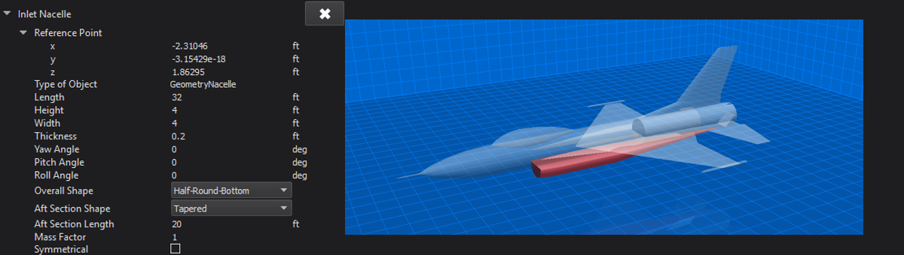Speed Brake¶
Users can add speed brakes to the vehicle. The speed brake’s positional information and physical attributes of length and width can be adjusted by the user. The user can also define the coefficient of drag multiplier for the speed brake as well as its max angle, max retraction rate and max extension rate.
Speed brakes support symmetry which allows the user to set up properties for a base speed brake that can be inherited by speed brakes specified by the chosen symmetry type. Symmetry types available are:
Single - no extra brakes created
Horizontal - uses the base user-defined speed brake to create two speed brakes along the horizontal axis of the vehicle.
Vertical - uses the base user-defined speed brake to create two speed brakes along the vertical axis of the vehicle.
When the speed brake component is selected, the 3D rendering of the vehicle will become transparent and highlight the selected speed brake.
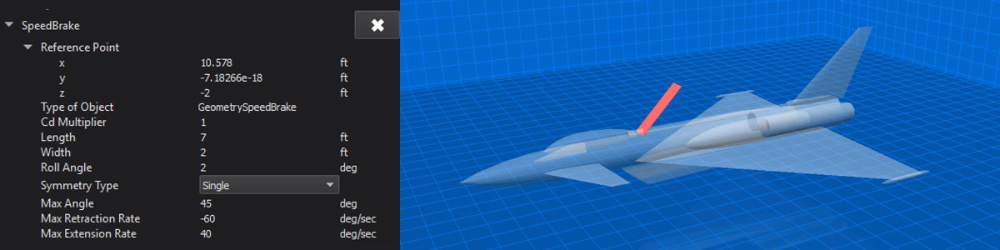Landing Gear (Aircraft only)¶
Users can add landing gear to aircraft. The landing gear’s positional information, and physical attributes of length, strut diameter, tire diameter, and tire width can be adjusted by the user. Landing gear also have friction and drag values that can be adjusted.
Landing gear support symmetry. This allows the user to set up properties for a base landing gear that will be used to create a set of landing gear along the vehicle’s horizontal axis if the Symmetrical check box is checked.
When the landing gear component is selected, the 3D rendering of the vehicle will become transparent and highlight the selected landing gear.
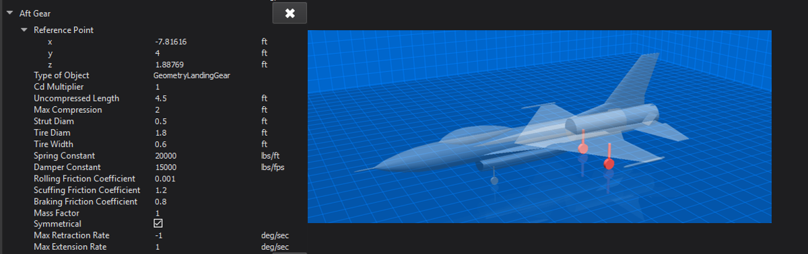Propulsion Data¶
The Propulsion Data vehicle component is one that cannot be renamed nor can it be removed from any vehicle. It lists information regarding the vehicle’s fuel tank and type of thrust vectoring to be used.
When the Propulsion Data component is selected, the 3D rendering of the vehicle will become transparent and highlight the propulsion object at the specified Fuel Tank CG.
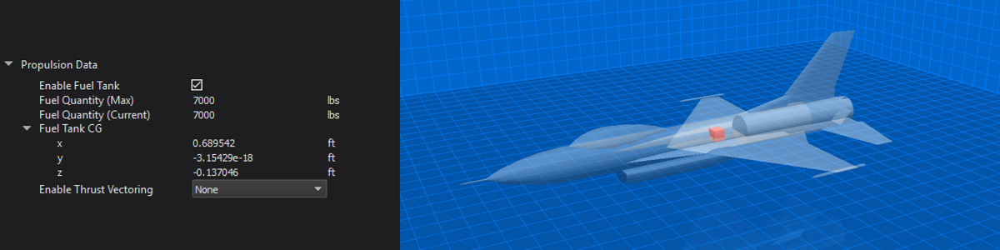Engine¶
Users can add engines to the vehicle. The engine’s positional information and orientation can be adjusted by the user.
An engine’s type and model can be changed from the respective combo boxes. Changing the EngineType will automatically populate the EngineModel combo box with available models for that type. Users can also edit an engine model or create a new one in this section. Refer to the Engine Designer for more information.
Engines support symmetry. This allows the user to set up properties for a base engine that will be used to create two engines along the vehicle’s horizontal axis if the Symmetrical check box is checked.
The “ignition delay” option is only provided for weapons. This option adds a P6DOF sequencer to the p6dof_object_type.
The “Latch Fuel Injection”, “Use Proportional Throttle”, and “Min Proportional Throttle” options are for Ramjets only. These correspond to the latch_fuel_injection, use_proportional_throttle, and minimum_proportional_thrust commands, respectively.
Note - the physical attributes length, diameter, trust offset and mass are all pulled in from the attributes of the engine model as defined in the Engine Designer.
When the engine component is selected, the 3D rendering of the vehicle will become transparent and highlight the selected engine.
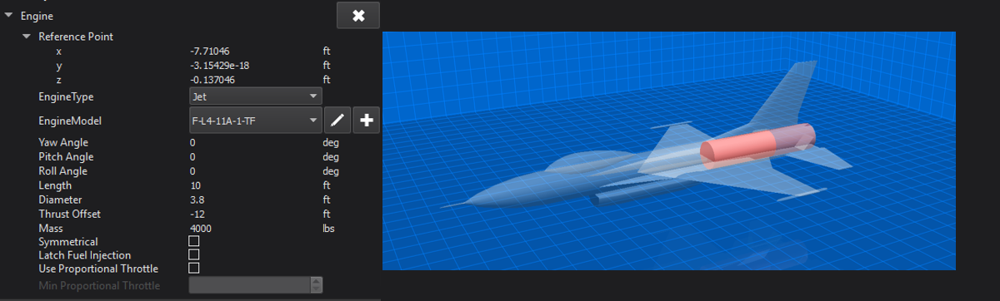Outputting a 3D model¶
Pressing the “Output 3D Model” button on the lower right side of the screen will export the vehicle rendered in the 3D viewing area into an object file that can be loaded into various visualization tools. The default location for the file will be in the resources/site/models directory, but this and the exported file type can be changed from the Settings dialog on the Start Page.
Geometry Page Viewing Options¶
Pressing the eye icon at the lower right side of the geometry page will bring up the Geometry View Options dialog.
There are two pages of interaction within this dialog, Focus Point Movement Options and Show/Hide Options. Selecting Focus Point Movement Options gives the user an interface to move the focus point of the 3D scene’s camera according to the button clicked (or by pressing the associated keyboard hotkey) . The interface appears below:
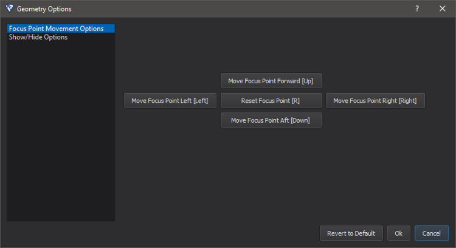Selecting Show/Hide Options gives the user an interface to toggle on and off various things in the 3D scene according to the boxes checked (or by pressing the associated keyboard hotkey) . The interface appears below:
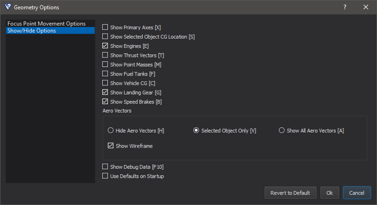The image below shows the F-L4-11A-1 model with the wireframe off (left) and the wireframe on (right). The bottom image shows Aero Vectors enabled for the selected object (the wing).
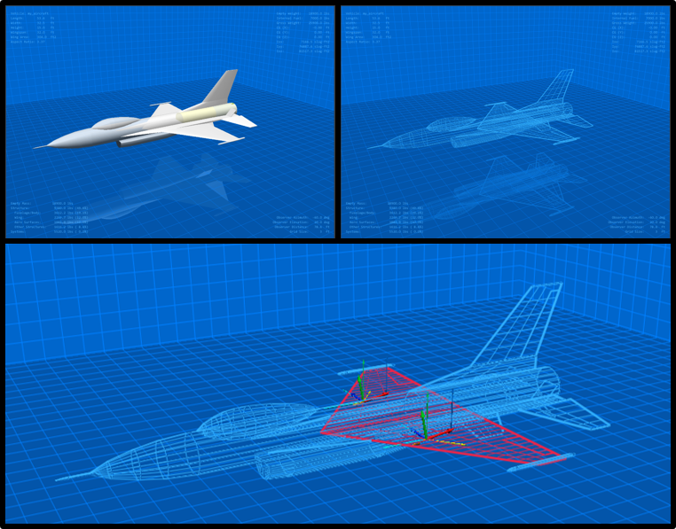Note
The “Aero Vectors” options “Selected Object Only” and “Show All Aero Vectors” are only applicable in wireframe mode.
Geometry Page Settings¶
Pressing the gears icon at the lower right side of the geometry page will bring up the Geometry Settings dialog.
There are two pages of interaction within this dialog, CG Movement Options and Aerodynamics Options. Selecting CG Movement Options gives the user an interface to move the vehicle and its components around the center of gravity based on the button clicked (or by pressing the associated keyboard hotkey) . The interface appears below:
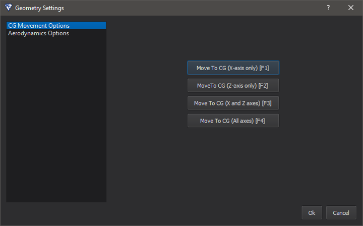Selecting Aerodynamics Options gives the user an interface to modify various aerodynamics settings of the vehicle based on the button clicked (or by pressing the associated keyboard hotkey). The user can also set the values and limitations the vehicle’s aerodynamics are tested at. Alpha and Beta symmetry options are provided to improve the speed of aerodynamics calculations. Note: the effects of these changes are best viewed when a vehicle surface component is selected along with having the Show All Aero Vectors geometry viewing option selected. The interface appears below:
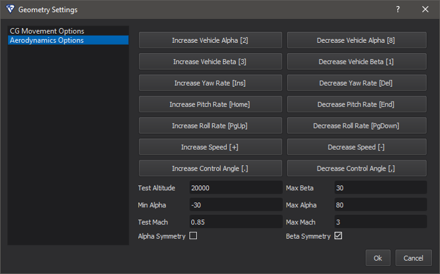